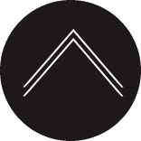

Význam soli
Význam soli v minulosti
P rechod zo stravy lovcov a zberačov na stravu zloženú prevažne zo zeleniny a obilnín zapríčinil potrebu získavať soľ z iných zdrojov. Avšak, keďže ľahko dostupná soľ v tej dobe bola vzácna a potreba pre ňu veľká, cena soli bola vysoká.
V západnej Afrike kupci vymieňali gram soli za gram zlata. V Etiópii a v strednej Afrike používali soľ ako platidlo.
V hrobkách bohatých zo starovekého Egypta boli nájdené solené ryby a vtáky. Egyptské múmie boli mumifikované pomocou soli. Egypťania začali obchodovať so soľou s Feničanmi a tí obchodovali s celým Stredozemým.
Soľ je skvelý konzervant, a preto sa využíval nie len na konzervovanie múmií, ale aj jedál.
Rím, ako aj iné talianské mestá, boli postavené blízko solivaru. Keď Rimania presunuli svoj solivar, postavili k nemu cestu - Via Salaria (Soľná cesta). Od 6. storočia p. n. l. ovládali rímski politici obchod so soľou. Cena soli bola umelo udržiavaná nízko, aby uspokojili obyvateľstvo. Avšak v čase potreby, napríklad počas vojen, bola na soľ uvalená soľná daň.
V 1. stor. p. n. l. sa soľ stala v Číne takou dôležitou komoditou, že obchod s ňou kontroloval štát. Soľ bola takou významnou, že cisár Zhaodi zvolal koncil, aby diskutovali o zavadení monopolu na soľ. Počas 1. storočia n. l. bola polovica príjmu čínskeho štátu spojená so soľou.
Soľ mala význam aj pre Benátčanov, ktorý s ňou obchodovali v Konštantínopole, vďaka čomu zbohatli.[5]
Význam soli v súčastnosti
Soľ sa stala neodmysliteľnou súčasťou našich životou. S príchodom nových technológii sa soľ zlacnila a v dôsledku toho ju konzumujeme viac ako predtým.
| Poradie | Krajina | Produkcia soli (2012) v tonách | % svetovej produkcie |
|---|---|---|---|
| 1 | Čína | 62 158 000 | 22,48 % |
| 2 | USA | 40 200 000 | 14,54% |
| 3 | India | 24 500 000 | 8,86% |
| 4 | Nemecko | 19 021 295 | 6,88% |
| 5 | Kanada | 10 844 624 | 3,92% |
Zdroj: [6]
Odporúčaná denná dávka sodíka podľa WHO by nemala presiahnuť 2000 mg (čo je ekvivalentné približne 5g soli).
Zdroj [7]
Štúdie uvádzajú, že zvýšený príjem soli vedie k zvýšenému riziku kardiovaskulárnych chorôb, mozgovej príhody a chorôb obličiek. Znížený príjem soli, v prípade bežného vysokého príjmu, znižuje krvný tlak.
Novšie štúdie uvádzajú, že riziko nastáva aj pri nízkom príjme soli. Preto odporúčajú udržiavať dennú dávku soli medzi 4 až 5 gramami.[8]
Soľ je v súčastnosti lacnejšia a dostupnejšia ako kedy predtým. Nachádza sa v mnohých potravinách a ani neriešime koľko. Slaná chuť je snáď pre všetkých príjemná, veď vždy, keď nám niečo nechutí, posolíme si. Ak však chceme byť zdravý, mali by sme si dávať pozor na to, aby sme jej nejedli priveľa, prípadne primálo.
